Charleston Herald building
チャールストン・ヘラルド新聞社ビル
概要
チャールストン・ヘラルド新聞社ビルは、アパラチアのチャールストン市にあるロケーションです。
ダウンタウンの目立つ建物で、大戦後の数年で荒廃が進んでいます。
1階には入れますがエレベーターは動いておらず、即席の足場や階段を使って上の階へアクセスします。
レイアウト
このビルはレスポンダーの体力試験の出発地点として使用されています。
2階にはファイア・ブリーザー体力試験ターミナルがあり、試験コースのスタート地点となっています。
ターミナルの近くには冷蔵庫、薪、調理ステーションが置かれています。
冷蔵庫には煮沸水が複数保管されています。
3階にはクイン・カーターとウィリアム・ブレイヤーの記者オフィスがあります。
カーターのオフィスにはホロテープが3本と、施錠された壁の金庫（ピックロック2）があります。
ブレイヤーのオフィスのドアは施錠されており（ピックロック0）、中にはダンボール箱に入ったタイプライターと施錠された壁の金庫（ピックロック1）があります。
この階の非常口から外に出ると、デッキチェアに座ったスケルトンがいます。
ここにはレーザートリップワイヤーが仕掛けてあり、触れると爆発します。
4階には編集長オーバビーのオフィスがあります。
編集長のデスクにはホロテープとパンフレットがターミナルと共に置かれています。
この階の非常口からバルコニーに出ると、隣のビルに接続された仮設の木製の橋があります。
その上の階への階段は崩壊した天井で塞がれています。
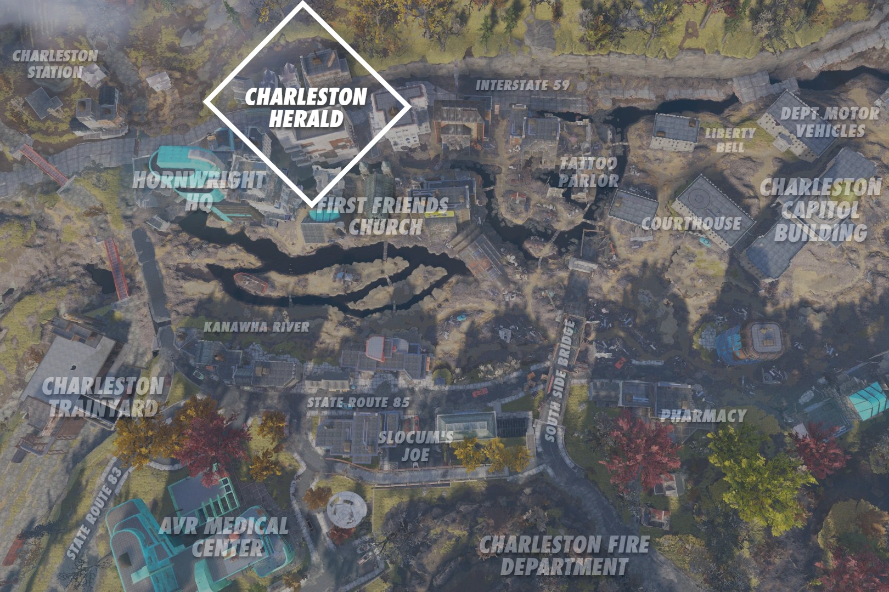
主なアイテム
- Speaker Poole interview — ホロテープ。クイン・カーターのオフィスの机上。
- Sam Blackwell Interview, Pt. One — ホロテープ。クイン・カーターのオフィスの床の壊れたダンボール箱の中。
- Sam Blackwell Interview, Pt. Two — ホロテープ。同じ箱の中にPt. Oneと一緒に。
- AMS: Corporate Bully — メモ。オーバビーのオフィスの外、コーヒーポットとマグカップのある大テーブル上。
- Carter and Blackwell - Traitors! — メモ。編集長オーバビーのオフィス内。
- Charleston Herald Exclusive: The Motherlode — ホロテープ。編集長オーバビーのオフィス内。
- Course instructions — ホロテープ。ビル2階、ファイア・ブリーザー体力試験ターミナルの左側の縁。
- Sam Blackwell interview notes — メモ。クイン・カーターのオフィス内、オレンジ色のファイルキャビネットの上の小箱の中。
- The Herald supports Quinn Carter — メモ。ビル2階、半円形のデスク上、壊れたターミナルの右側。
- Package for Quinn Carter — フォルダ。編集長のオフィスのデスク上。中には「Vigilant citizen's note to Carter」と「weigh station logs」が入っている。
- 武器の設計図（ランダム） — オーバビーのオフィス奥の額縁横のキャビネット上。
発見できるホロテープ・メモ
場所：クイン・カーターのオフィスの机上
クイン・カーター：プール議長！お待ちください！少しだけお時間を！
アビゲイル・プール：ちょうどいいわね……申し訳ありませんが、今は時間がないんです、カーターさん。
クイン・カーター：エヴァンス知事はまだ捜索中ですか？ホルブルックが代行知事だというのは本当ですか？
アビゲイル・プール：いいえ。継承順位の規定では、議長は多数党院内幹事よりも上位に位置します。あのね、今は時間が——
クイン・カーター：南西のチェックポイントがゾンビの群れに襲われたというのは本当ですか？
アビゲイル・プール：何ですって？そんな馬鹿な——いいえ。放射線の影響を受けた人々です。医療センターにたくさんいます。かわいそうな人たち……
クイン・カーター：ワシントンからの連絡はまだありませんか？まだ戦争中なのですか？突然変異の報告は？モスマンの目撃情報は？
アビゲイル・プール：もう十分です。ヘラルドはかつてまともな新聞だったのに、あなたたちはそれをゴシップ紙にしようとしている。今回は非公開会議です。マーシャル、このお友達を出口まで案内して。モスマン……冗談でしょう。
マーシャル・バーバー：聞いたろう。非公開会議だ。記者お断り。
クイン・カーター：くそ。分かりました。でもモスマンの目撃報告は実際にあるんです。
マーシャル・バーバー：ふーん。記者証を取り上げられる前にここから出な。
クイン・カーター：はい……はい！行きますよ、押さなくても……
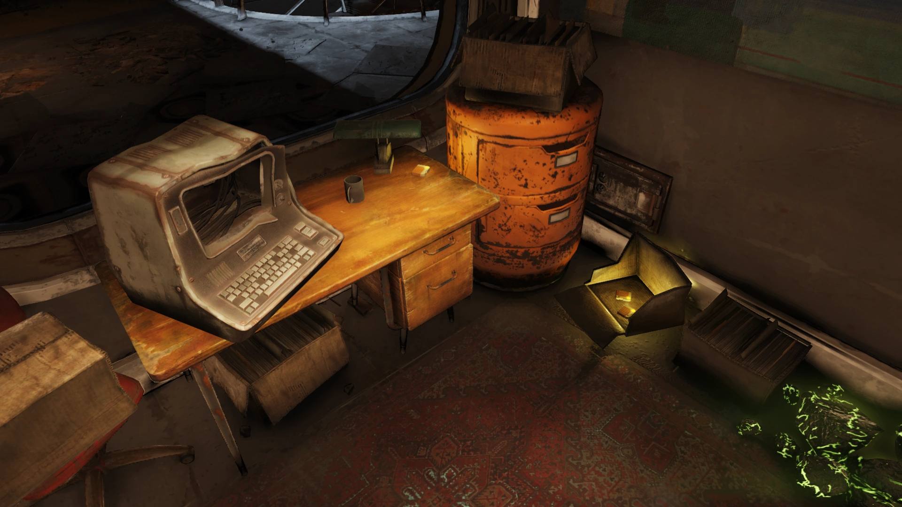
場所：クイン・カーターのオフィスの床、壊れたダンボール箱の中
クイン・カーター：はい、録音中です。ご連絡いただきありがとうございます。あなたの手紙が本物だと分かった時はどれほど驚いたか。
サム・ブラックウェル：もちろんです、カーターさん。道のりが大変でなかったことを願います。
クイン・カーター：まあ……ある意味、貴重な経験でした。頭に袋をかぶせられるところからインタビューが始まることはそうそうありませんから。いたずらじゃなくてよかったです。
サム・ブラックウェル：それについてはお詫びします。目立たないようにすることが、今の私たちにとって必要なのです。
クイン・カーター：それはなぜですか、上院議員？なぜあなたは突然地位を去ったのですか？
サム・ブラックウェル：去ることが家族を守る唯一の方法だと思ったからです、カーターさん。しかし、その後で私が大切に思っている多くの人々を重大な危険にさらしたままにしてしまったことに気づきました。それを正すためにご協力いただきたいのです。
クイン・カーター：どういう意味ですか、上院議員？
サム・ブラックウェル：政府の殿堂には邪悪な力が蠢いています。私とフリー・ステイツの仲間たちは、もはやこの国の腐りゆく屍に縛りつけられるつもりはありません。命を大切にする者なら誰でもそうすべきです。アメリカの人々に残された選択肢はただ一つ——独力で切り拓くことです。持てるだけのものを持ち、社会の網から離れ、急いでください。終わりが来ます、カーターさん。そしてその時、あなたの政府にはあなたを守る気など毛頭ないのです。
場所：クイン・カーターのオフィスの床、同じダンボール箱の中
クイン・カーター：邪悪な力？終わりが来る？上院議員、かなり大きな主張をされていますが、それを裏付ける証拠はお持ちですか？
サム・ブラックウェル：これは終末論の妄想ではありませんよ。そういう意味で聞いているなら。信頼できる情報源から受け取った情報です。
クイン・カーター：あなたの言葉をそのまま信じろと？
サム・ブラックウェル：信じていただくしかありません、カーターさん。私は命を救おうとしているのであって、情報源を暴くことでさらに多くの命を危険にさらすつもりはないのです。
クイン・カーター：上院議員、失礼なことを言うつもりはありませんが、あなたはパニックを引き起こそうとしているように聞こえます。証拠なしにそれに加担するわけには——それと、極秘情報ですが、あなたがチャールストンのある神経科医を何度も訪問しているのを——
サム・ブラックウェル：私の健康はここでは問題ではありません、カーターさん！人々の命がかかっているのです！行政府、産業界の大物、農務省！私は彼らの世界を覗き見てしまい、命を脅されたのです！娘の命まで！私たちは彼らにとって駒に過ぎない。そして唯一の生き残る道は……盤上から降りることです。私が求めているのは、そのメッセージを伝えてくださることだけです。
クイン・カーター：……悪意があって言ったわけではありません。ただ、私の側からこれがどう見えるかはご理解いただかないと。
サム・ブラックウェル：分かっています。ただ……繊細な話題なもので。
クイン・カーター：最後にもう一つだけ質問してもよろしいですか？
サム・ブラックウェル：それで情報を広めてくれるなら、どうぞ。
クイン・カーター：あなたは上院議員を正式に辞職されていません。辞職するおつもりですか？
サム・ブラックウェル：辞職します。このインタビューをもって正式な辞表とお考えください。情報を広めてください、カーターさん。お願いするのは、私の警告を一緒に伝えてくださること……それだけです。では失礼します。娘と私にはやるべきことがたくさんあるので。何しろ、もう頼れるのは自分たちだけですから。
場所：編集長オーバビーのオフィス、ターミナル左側の机上
ビル・ブレイヤー：ウィリアム・ブレイヤー、チャールストン・ヘラルドの調査記者です。現在、最近この周辺に出現した複数のホーンライト・インダストリアルの施設のうちの一つのセキュリティフェンスのすぐ外に立っています。今夜、ある界隈で「マザーロード・プロジェクト」と呼ばれているものの真相を探りに来ました。
これは地元の鉱山家族が求めてきた希望なのか？地域経済を活性化させる新たな鉱山プロジェクト？それとも環境団体が警告するように、足元の地面を汚染する新たな有毒廃棄物処理場なのか？
少なくとも、地元の専門家によれば、この地域で最近増加した地震活動はほぼ確実にこれらの施設と関連があるとのことです。そして今、私は自分の目で確かめに来ました。
フェンスの最初の隙間から入り込みました。ここのセキュリティは凄まじい。有刺鉄線。武装した警備員。まるで戦場です。小さな丘を越えて——なんだ……地面が揺れて——おい、あれは何だ？
ホーンライト社員：おい！お前！ここは私有地——くそ、あの記者だ。マズい！あいつ銃を持ってるぞ！
ビル・ブレイヤー：銃？待ってくれ、これは銃じゃ——あっ！あぁ……
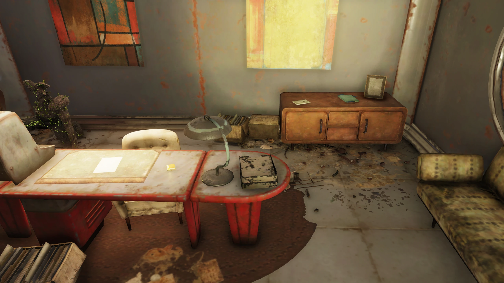
場所：ビル2階、ファイア・ブリーザー体力試験ターミナルの左側
メロディ・ラーキン：よし、静かに、新兵諸君。難しそうに見えるかもしれないが、準備さえできていれば大したことはない。矢印に従って、頭を回転させ続けろ。先の方に行くと議事堂が見える。あのボタンを叩いて、コースを辿ってここに戻ってこい。
ファイア・ブリーザー訓練生：（ぶつぶつ）……せっかくブーツを磨いたのに……
メロディ・ラーキン：今何と言った？言いたいことがあるなら吐き出せ。
訓練生：あの泥の中を走り回る意味が分からないんですが。
メロディ・ラーキン：いいか、ぶん殴って両目を一つにする前に聞け。「あの泥」の中にはうちの旦那がいるんだ。お前の父親も。彼女のばあちゃんも。あいつらの姉妹も。私たちは何週間もあの泥の中を這いずり回って、人を引きずり出した。クリスマスの大洪水で何千人が死んだ。さらに多くが見つからなかった。溺れたか、生き埋めになったか。丸一年、人々を引き出し続けた。だから敬意を払え。
他に何か言うことは？
訓練生たち：いいえ、隊長。
メロディ・ラーキン：何だって？！
訓練生たち：いいえ、隊長！
メロディ・ラーキン：よし！よし、ファイア・ブリーザーたち、コースに出ろ。仲間の命がお前たちの走りにかかっているつもりで走れ。
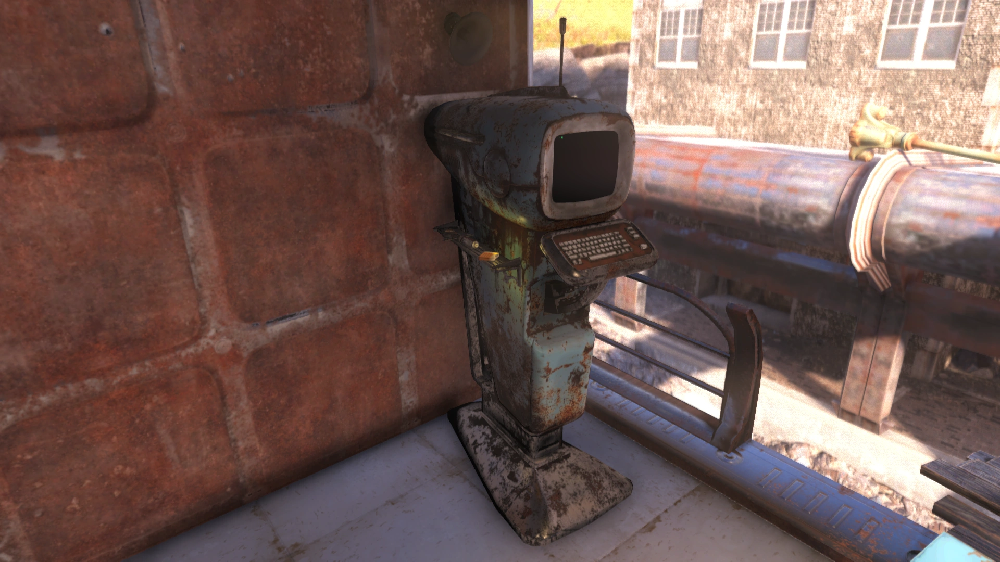
場所：オーバビーのオフィス外の大テーブル上
AMS：企業の横暴
アトミック・マイニング・サービスはアパラチアでは比較的新しい企業ですが、そのやり方はウェストバージニアの歴史を少しでも知る人間には馴染み深いものです。
武装した「警備要員」チームが暴動や労働争議を「鎮圧」するために使われているという報告は、本紙がほぼ毎日報じてきました。
残念ながら、さらに低い水準に達したことをお伝えしなければなりません。
AMSがウェストバージニアに初めて来た時、彼らは地域の救世主として称賛されました。古い鉱山をさらに深く掘るための新しい方法をもたらしたのです。
その方法に核爆薬の使用が含まれていても、炭鉱地帯のリスクに慣れた強靭な鉱山コミュニティは動じませんでした。
しかしAMSは到着してすぐに「技術的な問題」を理由にプロジェクトを放棄しました。
雇用は再び枯渇し、地域はさらに深い貧困に沈みました。
それだけで十分な損害のはずですが、AMSは終わっていませんでした。
夜盗のように、AMSは突然ウェルチの街に現れ、住民が暮らしている土地を含む資源権を主張しました。
当然、街はこの住居の強奪に抵抗しました。そしてAMSの悪名高い「警備要員」が投入されたのです。
AMSはなぜウェルチを欲しがるのでしょうか？AMSはコメントを出していません。
本紙の記者はAMSのロゴ入りの服を着た武装した男たちに街から追い出されました。
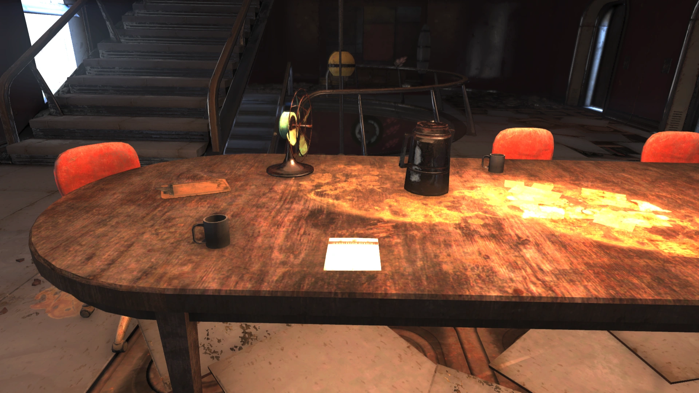
場所：編集長オーバビーのオフィスの机上
サム・ブラックウェルとクイン・カーター — 裏切り者！
もし私やあなたが部屋に座って強盗を録音し、犯人に関する情報の提供を拒否したら、刑務所行きです！
しかしクイン・カーターは、はるかに大きな犯罪の罪を負った男をインタビューしておきながら、自由の身で歩き回っています！
正義を支持し、クイン・カーターが反逆の共謀罪で起訴されるか、裏切り者サム・ブラックウェルとその「フリー・ステイツ」分離主義者の仲間の居場所を明かすまで、チャールストン・ヘラルドを一部たりとも買うな！
—— チャールストン市民反腐敗委員会
場所：クイン・カーターのオフィス、オレンジ色のファイルキャビネット上の小箱の中
インタビューメモ
全体的な印象：ブラックウェルが狂っているとは思わないが、何かがおかしかった。
地位を去ることで得られるものはほとんどない。
邪悪な力が働いていると本気で信じている。彼は狂いかけていて、ただ他の人よりうまく隠しているだけなのか？
次のステップ：上院議員を山に逃げ込ませた「邪悪な力」の正体を突き止める。
一般メモ
・インタビューの申し出は手作りの封筒で届いた。チャールストン市警の伝手で指紋照合してもらった。上院議員のものだった。信じられない。
・待ち合わせ場所：バークレー・スプリングス駅
・夜明けにマスクをした若い女性——明らかにジュディス・ブラックウェル（知事舞踏会で会ったことを忘れたらしい）——とマスクをした年配の男性、明らかに上院議員本人に迎えられた
・ほぼ真東に約30分のハイキング（袋越しに日の出が見えた。気が利いてるね）
・小川、ハイウェイ、湿地らしきもの、洞窟を通り、エレベーターで地下へ
・残りはテープの通り。ブラックウェルは完全に政治家モード：一貫したメッセージ、毅然とした態度で、私が夜中に現れるという彼の警告を真剣に受け止めるよう全力で仕向けてきた
場所：ビル2階、半円形のデスク上
チャールストン・ヘラルド
クイン・カーターを支持する
チャールストン・ヘラルド編集委員会
チャールストン・ヘラルド編集委員会の我々は、ヘラルドの記者クイン・カーターへの支持と、彼女の本紙での継続雇用を公に表明いたします。
サム・ブラックウェル元上院議員へのインタビューを受けて、カーター氏の辞任を求める世論は、報道の自由と国民に重要なニュースを報道する我々の義務という我が国の価値観に真っ向から反するものです。
カーター氏のインタビューは我が偉大な州の法律により完全に保護されており、ブラックウェル上院議員がインタビュー中に行った発言の性質に関わらず、上院議員の所在を明かす義務はありません。
したがって、カーター氏への全面的な支持以外のいかなる対応も必要ないと我々は考えます。
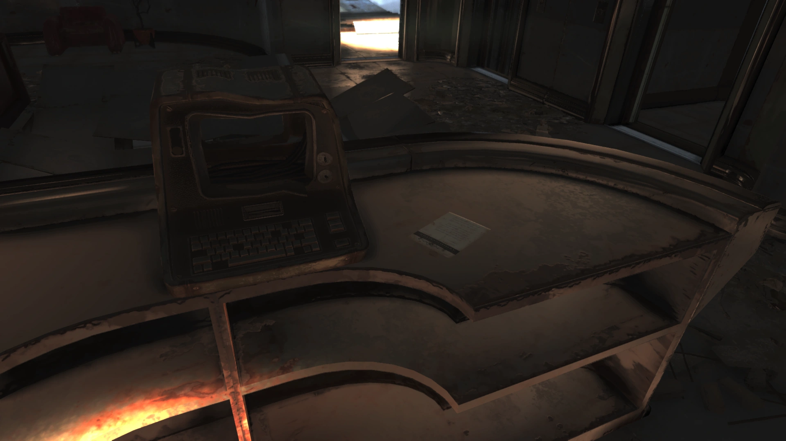
場所：編集長のオフィスのデスク上（Package for Quinn Carter内）
親愛なるクイン・カーターへ
この言葉は慎重に選びました。アパラチアであなたほど粘り強く真実に献身している人がいるとすれば、私は彼女を知りません。
私はおそらく、あなたの最も熱心なファンの一人でした。
あなたがこれを読んでいるなら、私は死んでいます。
陰謀を秘密にしておこうとするアメリカ政府のエージェントに殺されたのです。
信じがたいことかもしれませんが、「アパラチアの財宝」はデマではありません。
実在するのです。そしてそのために人が殺されてきました。
同封したのは私の調査結果の一部です。
どうか、放送し、出版し、配布してください。
他の証拠もまた共有されていれば、あなたか、あるいは他の誰かが全てのピースをつなぎ合わせ、最終的な真実に辿り着けるかもしれません。
敬具
目覚めた市民より
追伸：時間がありません。今はあなただけを信頼しています。クラークスバーグの郵便局に行って、私書箱999番を受け取ってください。
場所：編集長のオフィスのデスク上（Package for Quinn Carter内）
モーガンタウン計量所
I-68 eb EXIT LL-Aa
日次自動チケットログ
001: 0217 | 超過: 29,120 lb | 罰金: $31,000 — ステータス: 管理者オーバーライド
002: 0226 | 超過: 28,830 lb | 罰金: $30,000 — ステータス: 管理者オーバーライド
003: 0303 | 超過: 35,110 lb | 罰金: $42,000 — ステータス: 管理者オーバーライド
004: 1101 | 超過: 01,010 lb | 罰金: $10,000 — ステータス: 全額支払済
005: 1401 | 超過: 00,003 lb | 罰金: $10,000 — ステータス: 回収業者に送付
006: 1908 | 超過: 00,831 lb | 罰金: $10,000 — ステータス: 登録口座から引落
007: 2113 | 超過: 00,303 lb | 罰金: $10,000 — ステータス: 警察呼出、全額支払済
深夜に莫大な量の物資を輸送？免除された罰金？計量所の唯一の係員にインタビューしたところ、「管理者」の存在すら知らなかった。
権力のある誰かがこれをもみ消そうとしている。
ターミナルエントリ
ビル内には編集長のターミナルとファイア・ブリーザー体力試験ターミナルの2台が設置されています。
編集長のターミナル
4階、編集長オーバビーのオフィスの赤い金属デスク上に設置。
この新しい自動投票システムを鷹のように監視する必要がある。開発に携わったと言われている全エンジニアの名前を出してくれ。国籍も一緒にだ。アメリカの選挙技術に外国人が一人でも関わっていたら、記事のネタだ。
投票法案6号に本気の資金力を持った誰かが大きなバックアップをしている。この地域の行政全体を自動化する？ホーンライトの指紋がべったりだ。確実な証拠を持ってこい。
クイン、お前の味方であることは分かっているだろうが、このサム・ブラックウェルのインタビュー記事で受けている非難が「皮を焼き剥がす」レベルに上がっている。怒った地元住民や政治家と戦うことはできるが、連邦政府から電話が来ているんだ、クイン。しかも遠回しじゃない。逮捕するだけじゃすまないと脅されている、分かるか？
ヘラルドは一度も情報源を裏切ったことはないし、今始めるつもりもない。だがお前の背中にはパープル・マウンテンほどの標的が貼り付いている。銃を買え。本気で言っている。それとホテルの部屋をいくつか用意する。同じ部屋に二度泊まるな。夜はドアの鍵をかけて、誰が来ても開けるな。
ファイア・ブリーザー体力試験ターミナル
2階に設置。
ファイア・ブリーザー志願者へ
試験が始まったら、ボタンを順番に押してください（A → B）。その後、スタート地点に戻ってタイムを確定させてください（B → A）。
まだ試験に登録していない方は、チャールストン消防署に向かい、当直の隊長（おそらく私がまだ息をしていれば私です）に報告してください。
|| メロディ・ラーキン ||
目標タイム：3分00秒以内
登場作品
チャールストン・ヘラルド新聞社ビルは『Fallout 76』にのみ登場します。
ギャラリー
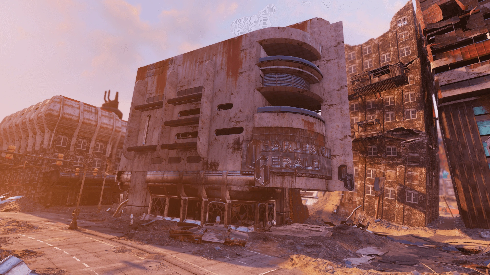
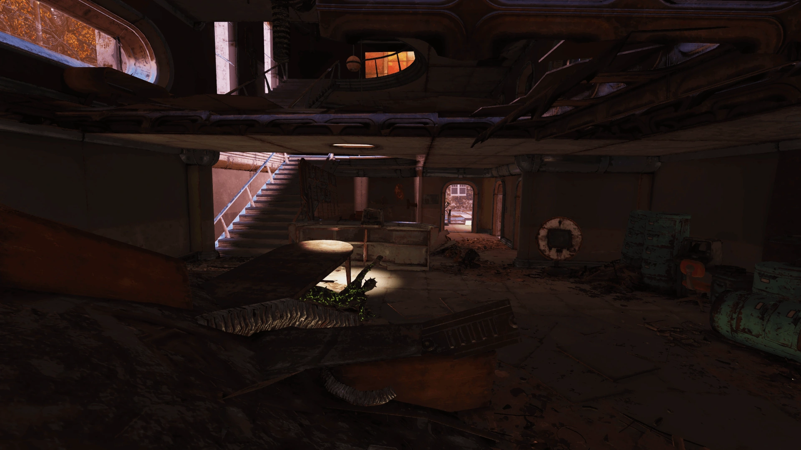
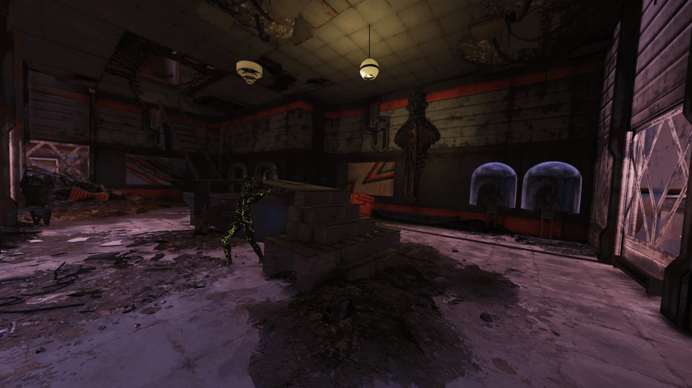
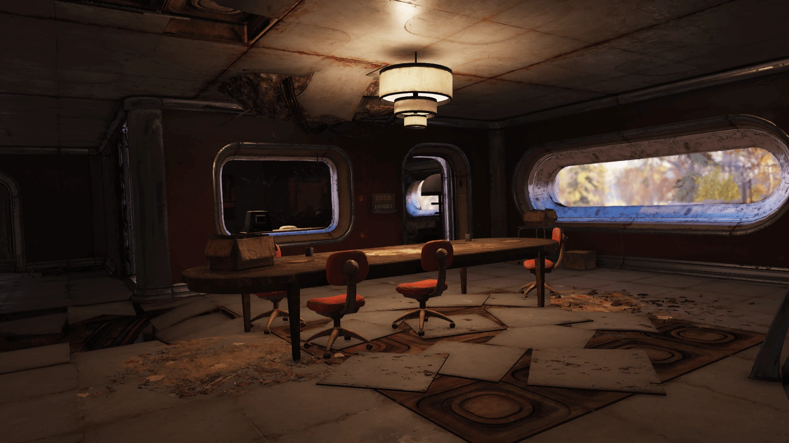
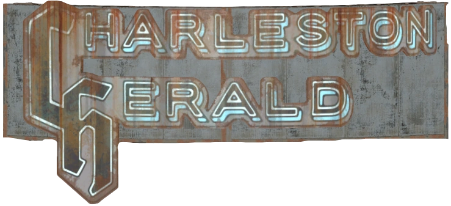
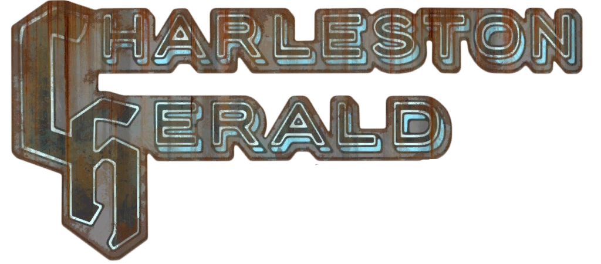
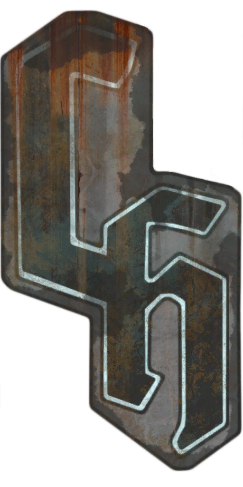
チャールストン・ヘラルド新聞社ビルは、見た目は荒廃したオフィスビルですが、中に入ると大戦前のアパラチアで何が起きていたかがびっしり詰まっています。
特にクイン・カーターのオフィスに散らばるホロテープとメモがすごい。サム・ブラックウェルのインタビューを2パートに分けて聞くと、エンクレイヴの陰謀を知って逃亡した上院議員と、それを追いかける地方記者のやり取りがリアルに浮かんできます。ブラックウェルが「盤上から降りろ」と叫ぶ場面は、フリー・ステイツの結成動機がストレートに伝わってきて、このゲームのロアの深さを改めて感じます。
一方で、プール議長へのインタビューは全然違うトーンで、モスマンの目撃報告をぶつけたら「モスマン……冗談でしょう」と呆れられて追い出されるカーターの姿はちょっと笑えます。でもこのインタビューからは、大戦直後のチャールストン議会がどれだけ混乱していたかも見えてきて、単なるギャグでは終わりません。
そしてビル・ブレイヤーのマザーロード取材ホロテープ。テープレコーダーを銃と間違えられて撃たれるという結末は、ホーンライト社がどれだけ秘密を守ろうとしていたかを物語っています。記者二人がそれぞれ命を懸けて取材していた新聞社——そう考えると、このビルは単なるファイア・ブリーザーの体力試験スタート地点ではなく、戦前アパラチアのジャーナリズムの最前線だったんですね。
編集長オーバビーがカーターに「銃を買え」「同じホテルに二度泊まるな」と指示するターミナルエントリも印象的です。連邦政府から直接脅迫されていた中で、それでも情報源を守り通そうとした新聞社の矜持が見えます。荒廃したビルの中に、こういうドラマが何層にも重なっているのがFallout 76の醍醐味だと改めて思います。
This article was created by translating and editing Charleston Herald building from Nukapedia: The Fallout Wiki.
Licensed under the Creative Commons Attribution-Share Alike License (CC BY-SA 3.0).
© Overseer Mohi's Terminal — Fallout Lore Archive
コミュニティ維持のため、寄付を受け付けております。
> COMMENTS